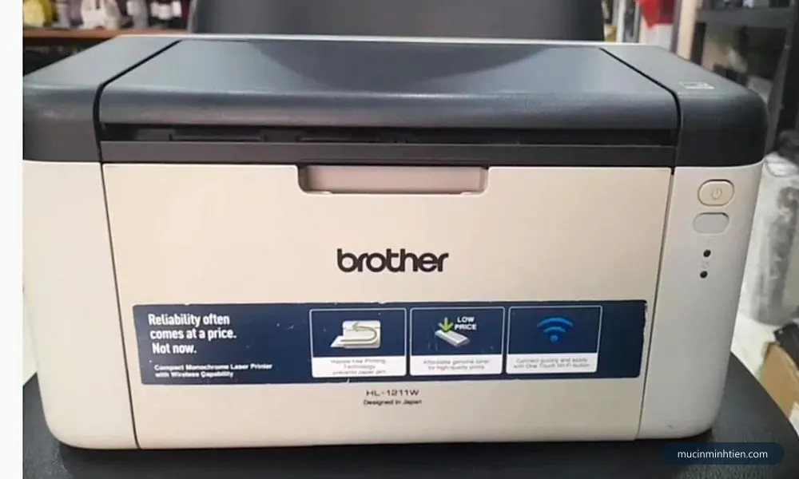
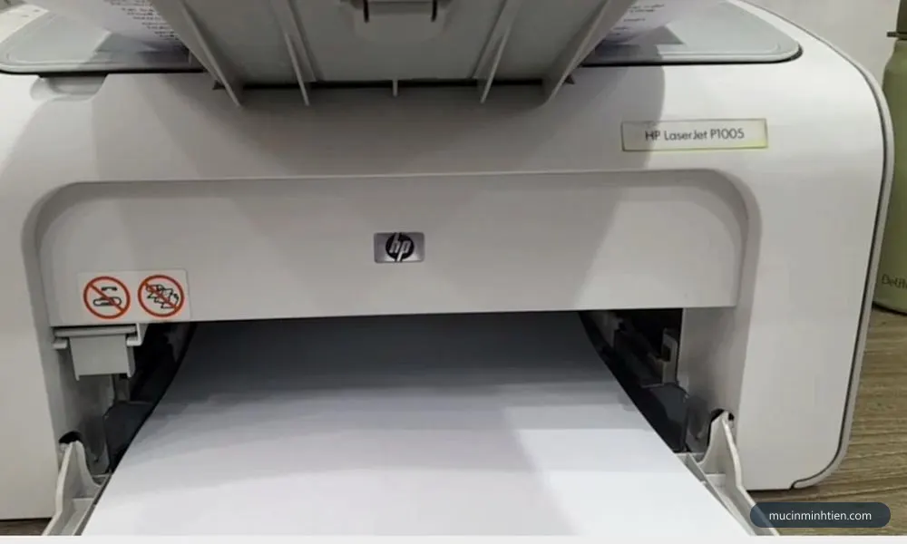
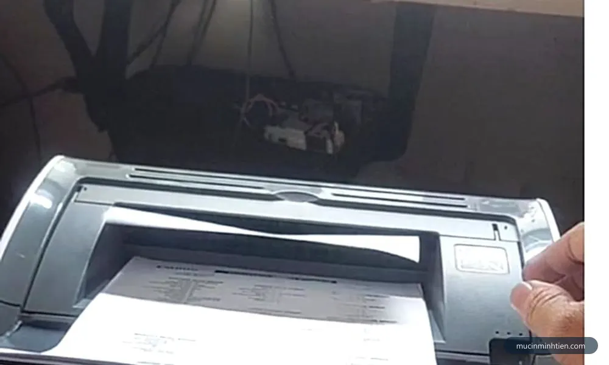

Máy in bị sọc ngang: 6 nguyên nhân và cách khắc phục
Bước 1 — Đo khoảng cách giữa hai vệt sọc
Đây là mẹo nhà nghề mà hầu như không hướng dẫn phổ thông nào nói tới, dù nó cho kết quả gần như chắc chắn và chỉ tốn một cây thước kẻ.
Nguyên lý rất đơn giản. Mỗi bộ phận trong máy in là một ống trụ quay tròn. Nếu bề mặt ống có một vết xước, một điểm mòn hay một hạt mực đóng cứng, thì cứ mỗi vòng quay nó lại chạm vào giấy đúng một lần và để lại một vệt. Khoảng cách giữa hai vệt liền nhau chính bằng chu vi của ống đó, tính bằng đường kính nhân 3,14. Mà mỗi ống trong máy có đường kính khác nhau, nên con số đo được là chữ ký nhận dạng của nó.
Cách làm: in ba trang toàn chữ hoặc một trang tô đen nếu máy hỗ trợ, chọn tờ có vệt rõ nhất, đặt thước dọc theo mép giấy và đo từ mép trên của vệt thứ nhất tới mép trên của vệt thứ hai. Đo hai ba cặp vệt rồi lấy con số lặp lại nhiều nhất.
| Khoảng cách đo được | Bộ phận thủ phạm | Nằm ở đâu | Giá linh kiện |
|---|---|---|---|
| khoảng 28 – 38 mm | Trục sạc (trục cao su đen nhỏ) | Trong hộp mực | theo bộ hộp mực |
| khoảng 38 – 50 mm | Trục từ | Trong hộp mực | từ 20.000 đ |
| khoảng 60 – 78 mm | Lô sấy hoặc lô ép | Trong máy, cụm sấy | từ 49.000 đ |
| khoảng 75 – 95 mm | Drum (trống từ) | Trong hộp mực | từ 39.000 đ |
| không lặp đều | Mực cạn, tiếp điểm bẩn hoặc giấy ẩm | — | 0 đ |
Các con số trên là khoảng phổ biến của dòng laser A4 văn phòng, tính từ đường kính thực của từng trục. Máy khổ A3 và máy photocopy có trục lớn hơn nên chu kỳ dài hơn.
Hai khoảng 60–78 mm và 75–95 mm có phần chồng nhau, nên nếu đo ra quanh 75 mm thì cần thêm một phép thử để tách bạch. Phép thử này quyết định luôn hướng xử lý về sau:

Bước 2 — Lắc hộp mực và in mười trang liên tục
Bước này để loại trừ nguyên nhân rẻ nhất trước khi nghĩ tới chuyện thay đồ. Mực bột khi còn ít sẽ dồn về một phía trong khoang chứa, làm trục từ hút mực không đều theo từng vòng quay, và kết quả nhìn giống hệt lỗi trục từ hỏng.
Rút hộp mực ra, cầm hai đầu, lắc ngang qua lại năm sáu lần theo chiều trục. Không lắc dọc, không dốc ngược, vì mực sẽ đổ ra khoang máy. Lắp lại và in liên tục mười trang, rồi đọc kết quả:
- Vài trang đầu hết sọc rồi sọc quay lại — mực sắp cạn, cần nạp mực. Đây là kết quả hay gặp nhất khi vệt mờ và không lặp đều.
- Hết sọc hẳn cả mười trang — chỉ là mực dồn lệch tạm thời, chưa cần làm gì thêm.
- Sọc y nguyên từ trang đầu tới trang cuối — không liên quan lượng mực, đi tiếp bước 3.
Nếu ra kết quả cần nạp mực, hãy nạp đúng chủng loại mực bột của dòng máy. Mực sai kích thước hạt làm trục từ mất khả năng hút rất nhanh và sinh đúng lỗi sọc này chỉ sau vài trăm trang — chi tiết ở bài cách chọn mực in đúng máy.
Bước 3 — Vệ sinh tiếp điểm và lò xo tiếp đất
Hộp mực trao đổi điện với máy qua vài điểm tiếp xúc kim loại nhỏ ở hai đầu, cộng thêm một lò xo hoặc lá đồng tiếp đất cho drum. Bụi mực bám lên các điểm này làm điện thế trên drum chập chờn, và bản in xuất hiện vệt xám ngang xuất hiện ngẫu nhiên, không theo chu kỳ nào cả.
- Tắt máy và rút điện, đợi máy nguội hẳn.
- Rút hộp mực, đặt lên tờ giấy sạch. Quan sát hai đầu hộp tìm các điểm kim loại lộ ra.
- Lau các điểm đó bằng khăn khô mềm hoặc tăm bông khô. Không dùng cồn, không dùng nước.
- Soi đèn vào khoang máy tìm các điểm tiếp xúc tương ứng và lò xo tiếp đất, lau tương tự.
- Hút hoặc phủi sạch bụi mực rơi trong khoang, lắp hộp mực lại và in thử ba trang.
Riêng máy Canon LBP2900 dùng hộp mực 12A có một lẫy nhựa và một cụm tiếp điểm rất hay bám bụi, gây cả lỗi sọc lẫn lỗi không nhận hộp mực. Nếu đang dùng dòng này, đọc thêm Canon 2900 không nhận hộp mực và tra linh kiện tại trang hộp mực 12A.

Bước 4 — Kiểm tra cụm sấy khi vệt ngang bị nhòe
Cụm sấy gồm lô sấy sinh nhiệt và lô ép cao su ép giấy vào lô sấy. Mực bột được nung chảy ở đây rồi ép bám vĩnh viễn vào sợi giấy. Khi bề mặt lô sấy mòn, xước, hoặc bao lụa bọc ngoài bị rách một điểm, thì đúng chỗ đó mực không được ép đủ, và mỗi vòng quay lại để lại một vệt ngang nhòe.
Dấu hiệu nhận biết cụm sấy hỏng, khá đặc trưng nên ít khi nhầm:
- Chạm tay vào vệt là mực bám ra tay, hoặc lấy móng tay cạo nhẹ thì mực tróc ra.
- Vệt lặp đều với chu kỳ dài, thường trên 60 mm.
- Đổi hộp mực khác vẫn y nguyên vệt đó.
- Đôi khi kèm mùi khét nhẹ hoặc tiếng cọ đều đều khi giấy đi qua.
Cụm sấy nằm sâu trong máy, chạy ở nhiệt độ cao và có bộ phận điện trở nhiệt dễ đứt nếu thao tác sai. Đây là ranh giới hợp lý để dừng tự làm. Nếu bạn xác định lỗi ở đây, hãy để kỹ thuật viên tháo — chi phí thay lô sấy hay bao lụa thấp hơn nhiều so với rủi ro làm đứt thanh nhiệt hoặc lệch cảm biến.
Bước 5 — Loại trừ giấy và môi trường
Đây là nguyên nhân bị bỏ sót nhiều nhất, đặc biệt ở TP.HCM vào mùa mưa. Giấy hút ẩm dẫn điện tốt hơn giấy khô, làm điện tích trên drum phóng không đều xuống giấy, và bản in nổi vệt ngang mờ xuất hiện ngẫu nhiên. Tình huống này rất hay bị chẩn đoán nhầm thành hỏng drum, thay drum xong vẫn nguyên lỗi.
- Mở một ram giấy mới còn nguyên bọc nylon, in thử mười trang. Hết sọc thì thủ phạm chính là xấp giấy cũ.
- Giấy đã mở bọc để trong khay nhiều tuần trong phòng không máy lạnh gần như chắc chắn đã ngậm ẩm.
- Không phơi nắng hay sấy giấy để chữa cháy — giấy cong vênh sẽ gây kẹt giấy, đổi vấn đề này lấy vấn đề khác.
- Dùng giấy đúng định lượng 70–80 gsm cho máy văn phòng. Giấy quá mỏng cũng gây vệt ngang do bám nhiệt không đều.

Máy in phun bị sọc ngang là chuyện hoàn toàn khác
Máy in phun không có drum, không có trục từ, không có lô sấy. Ở dòng này, sọc ngang gần như luôn là đầu phun tắc một số vòi. Đầu phun chạy ngang qua lại trên trang giấy, nên một vòi chết sẽ để lại một vạch trắng nằm ngang chạy suốt chiều rộng trang.
Thứ tự xử lý đúng là in Nozzle Check trước để nhìn thấy vòi nào mất, rồi mới chạy Head Cleaning. Làm ngược lại thì tốn rất nhiều mực mà không biết có tiến triển hay không, và mỗi lần Head Cleaning lại đẩy bộ đếm mực thải đầy nhanh hơn. Quy trình đầy đủ có ở bài cách vệ sinh đầu phun máy in Epson.
Nếu máy Epson dòng L còn nháy đèn kèm theo thì phải đọc tín hiệu đèn trước đã, xem máy in Epson nháy 2 đèn đỏ.
Bảng tra: kiểu sọc ngang nào ứng với bộ phận nào
Đây là bảng kỹ thuật viên dùng khi nhận máy tại xưởng, sắp theo thứ tự từ rẻ tới đắt để kiểm tra từ trên xuống.
| Biểu hiện | Bộ phận nghi ngờ | Cách xử lý | Chi phí tham khảo |
|---|---|---|---|
| Vệt xám mờ, không lặp đều, giấy để lâu trong khay | Giấy ẩm | Đổi ram giấy mới | 0 đ |
| Vệt xám ngẫu nhiên, đậm nhạt thất thường | Tiếp điểm hộp mực bám bụi | Lau tiếp điểm bằng khăn khô | 0 đ |
| Lắc hộp mực thì đỡ, in tiếp lại sọc | Mực sắp cạn | Nạp mực | từ 80.000 đ |
| Vệt lặp đều, cách nhau khoảng 38 – 50 mm | Trục từ mòn | Thay trục từ | từ 20.000 đ |
| Vệt lặp đều, cách nhau khoảng 75 – 95 mm | Drum xước hoặc mòn lớp phủ | Thay drum | từ 39.000 đ |
| Vệt lặp đều trên 60 mm, chạm tay dính mực | Lô sấy mòn hoặc bao lụa rách | Thay lô sấy, bao lụa | từ 49.000 đ |
| Vệt kèm mực rơi vãi trong khoang máy | Gạt mực mẻ | Thay gạt mực | từ 30.000 đ |
| Vạch trắng ngang trên máy in phun | Đầu phun tắc vòi | Nozzle Check rồi Head Cleaning | 0 – 150.000 đ |
Giá trên là giá linh kiện tham khảo trong bảng giá 773 mã, chưa gồm công thay. Giá chính xác phụ thuộc dòng máy — gọi 0915 510 203 kèm model máy để được báo đúng, hoặc tra nhanh ở công cụ tra hộp mực theo model.
Khi nào nên gọi kỹ thuật viên
Ba bước đầu bạn hoàn toàn tự làm được và chúng giải quyết phần lớn ca sọc ngang nhẹ. Nên gọi thợ trong các trường hợp sau:
- Đo được chu kỳ trên 60 mm và đổi hộp mực vẫn còn sọc — lỗi nằm ở cụm sấy, phải mở máy.
- Vệt ngang chạm tay dính mực, kèm mùi khét hoặc tiếng cọ khi in.
- Đã thay drum, thay trục từ mà vệt vẫn nguyên vị trí và nguyên chu kỳ.
- Máy in màu bị sọc ngang chỉ ở một màu — phải kiểm tra riêng từng cụm drum và cụm mực, phức tạp hơn máy đen trắng nhiều.
- Máy dùng cho công việc gấp, không có thời gian thử từng bước.
Báo giá xử lý máy in bị sọc ngang tận nơi
Chi phí phụ thuộc bộ phận thật sự hỏng. Kỹ thuật viên luôn kiểm tra và báo giá trước khi thay bất cứ thứ gì.
| Hạng mục | Áp dụng | Giá tham khảo |
|---|---|---|
| Kiểm tra, vệ sinh tiếp điểm và khoang hộp mực | Mọi dòng máy | từ 100.000 đ |
| Nạp mực hộp mực laser | HP, Canon, Brother | 80.000 – 150.000 đ |
| Thay trục từ | Tùy dòng máy | từ 20.000 đ + công |
| Thay drum | Tùy dòng máy | từ 39.000 đ + công |
| Thay gạt mực | Tùy dòng máy | từ 30.000 đ + công |
| Thay lô sấy, lô ép | Máy in laser | từ 49.000 đ + công |
| Thay bao lụa cụm sấy | HP, Canon dòng phổ thông | từ 80.000 đ + công |
| Vệ sinh đầu phun máy in phun | Epson, Canon dòng phun | từ 150.000 đ |
Xem đầy đủ hạng mục và cam kết ở trang dịch vụ sửa máy in tận nơi TP.HCM.
Cách phòng tránh sọc ngang tái phát
- Cất giấy trong bọc nylon kín. Chỉ lấy ra đúng lượng dùng trong tuần. Riêng khoản này loại bỏ được một nguyên nhân rất hay tái phát vào mùa mưa.
- Mỗi lần nạp mực yêu cầu vệ sinh gạt và kiểm tra drum. Chi phí thêm không đáng kể mà tránh được cả sọc ngang lẫn sọc đen dọc.
- Không in giấy đã ghim kẹp hay giấy có ghim sót. Một mẩu ghim đi qua cụm sấy đủ để tạo vết xước vĩnh viễn trên lô sấy.
- Đừng cố in tiếp khi đã thấy sọc. Mỗi trang lỗi vẫn tiêu tốn một vòng quay của drum, trục từ và lô sấy, làm chúng mòn thêm mà chẳng thu được bản in dùng được.
- Nạp mực đúng chủng loại. Mực bột sai kích thước hạt là nguyên nhân âm thầm khiến trục từ và gạt mực hỏng sớm.
Câu hỏi thường gặp
Máy in bị sọc ngang khác gì sọc dọc?
Vì sao phải đo khoảng cách giữa hai vệt sọc ngang?
Máy in bị sọc ngang có tự sửa tại nhà được không?
Sọc ngang chạm tay vào bị nhòe mực là lỗi gì?
Máy in phun bị sọc ngang có giống máy in laser không?
Chi phí sửa máy in bị sọc ngang khoảng bao nhiêu?
Bài viết liên quan
- Máy in bị sọc đen dọc: 5 nguyên nhân và cách khắc phục
- Canon 2900 bị sọc đen dọc: nguyên nhân và cách xử lý
- Máy in bị sọc trắng dọc: 6 nguyên nhân và cách xử lý
- Máy in bị sọc trắng ngang: xử lý theo từng loại máy
- Máy in bị lem mực: 6 nguyên nhân và cách khắc phục
- Máy in ra giấy trắng: 7 nguyên nhân và cách khắc phục
- Tra theo mã hộp mực: máy nào dùng được, giá bao nhiêu